x <- 10 # assigns the value 10 to x
y <- 5 # assigns the value 5 to yBy the end of this lab you will:
- Have R and R-studio Downloaded on your machine
- Be able to use R for basic analysis and graphing
Things To Remember
- File names and code should be legible
- Learn macros to save time and order your code
- Learning is making mistakes; try first, and then seek help.
Introduction
- Why learn R?
- You’ll need it for your final report.
- Supports your psychology coursework.
- Enhances your coding skills.
Install R
- Visit the comprehensive r archive network (cran) at https://cran.r-project.org/
- Select the version of r suitable for your operating system (windows, mac, or linux)
- Download and install it by following the on-screen instructions
Install RStudio
- Visit rstudio download page at https://www.rstudio.com/products/rstudio/download/
- Choose the free version of rstudio desktop,
- Download it for your operating system
- Install and open
Create new project
file>new project- Choose new directory
- Specify the location where the project folder will be created
- Click
create project
Exercise 1: Install tidyverse
- Open rstudio: launch rstudio on your computer
tools>install packages- Type
tidyverse - Click on the install button
- Type
library(tidyverse)in the console and pressenter
Execut Code
- Use
Ctrl + Enter(Windows/Linux) orCmd + Enter(Mac).
Assignment Operator
The assignment operator in R is <-. This operator assigns values to variables.
Alternative assignment: ::: {.cell}
x = 10
y = 5:::
Comparing values: ::: {.cell}
10 == 5 # returns FALSE[1] FALSE:::
RStudio Assignment Operator Shortcut
- For macOS:
Option+-inserts<-. - For Windows and Linux:
Alt+-inserts<-.
Keyboard Shortcuts
Explore keyboard shortcuts in RStudio through Tools -> Keyboard Shortcuts Help.
Concatenation
The c() function combines multiple elements into a vector.
numbers <- c(1, 2, 3, 4, 5) # a vector of numbers
print(numbers)[1] 1 2 3 4 5Arithmetic Operations
Addition and subtraction in R:
sum <- x + y
print(sum)[1] 15difference <- x - y
print(difference)[1] 5Multiplication and Division
# Scalar operations
product <- x * y
quotient <- x / y
# vector multiplication and division
vector1 <- c(1, 2, 3)
vector2 <- c(4, 5, 6)
# Vector operations
vector_product <- vector1 * vector2
vector_division <- vector1 / vector2Be cautious with division by zero:
result <- 10 / 0 # Inf
zero_division <- 0 / 0 # NaNInteger division and modulo operation:
integer_division <- 10 %/% 3
remainder <- 10 %% 3Logical Operators
Examples of NOT, NOT EQUAL, and EQUAL operations:
x_not_y <- x != y
x_equal_10 <- x == 10OR and AND operations:
vector_or <- c(TRUE, FALSE) | c(FALSE, TRUE)
single_or <- TRUE || FALSE
vector_and <- c(TRUE, FALSE) & c(FALSE, TRUE)
single_and <- TRUE && FALSEIntegers
- Whole numbers without decimal points, defined with an
Lsuffix
x <- 42L
str(x) # check type int 42- Conversion to numeric
y <- as.numeric(x)
str(y) num 42Characters
- Text strings enclosed in quotes
name <- "alice"Factors
- Represent categorical data with limited values
colors <- factor(c("red", "blue", "green"))Ordered Factors
- Factors with and without inherent order
education_levels <- c("high school", "bachelor", "master", "ph.d.")
education_factor_no_order <- factor(education_levels, ordered = FALSE)
education_factor <- factor(education_levels, ordered = TRUE)
education_ordered_explicit <- factor(education_levels, levels = education_levels, ordered = TRUE)- Operations with ordered factors
edu1 <- ordered("bachelor", levels = education_levels)
edu2 <- ordered("master", levels = education_levels)
edu2 > edu1 # logical comparison[1] TRUE- Modifying ordered factors
new_levels <- c("primary school", "high school", "bachelor", "master", "ph.d.")
education_updated <- factor(education_levels, levels = new_levels, ordered = TRUE)
str(education_updated) Ord.factor w/ 5 levels "primary school"<..: 2 3 4 5table(education_updated)education_updated
primary school high school bachelor master ph.d.
0 1 1 1 1 Strings
- Sequences of characters
you <- 'world!'
greeting <- paste("hello,", you)
# hello world
greeting[1] "hello, world!"Vectors
- Fundamental data structure in R
numeric_vector <- c(1, 2, 3, 4, 5)
character_vector <- c("apple", "banana", "cherry")
logical_vector <- c(TRUE, FALSE, TRUE, FALSE)- Manipulating vectors
vector_sum <- numeric_vector + 10
vector_multiplication <- numeric_vector * 2
vector_greater_than_three <- numeric_vector > 3table() Function
- Generates frequency tables for categorical data
table(vector_greater_than_three)vector_greater_than_three
FALSE TRUE
3 2 Dataframes
- Creating and manipulating data frames
# clear previous `df` object (if any)
rm(df)
df <- data.frame(
name = c("alice", "bob", "charlie"),
age = c(25, 30, 35),
gender = c("female", "male", "male")
)
# look at structure
head(df) name age gender
1 alice 25 female
2 bob 30 male
3 charlie 35 malestr(df)'data.frame': 3 obs. of 3 variables:
$ name : chr "alice" "bob" "charlie"
$ age : num 25 30 35
$ gender: chr "female" "male" "male"table(df$gender)
female male
1 2 table(df$age)
25 30 35
1 1 1 table(df$name)
alice bob charlie
1 1 1 Access Data Frame Elements
- By column name and row/column indexing
# by column name
names <- df$name
# by row and column
second_person <- df[2, ]
age_column <- df[, "age"]Using subset() Function
- Extracting rows based on conditions
very_old_people <- subset(df, age > 25)
summary(very_old_people$age) Min. 1st Qu. Median Mean 3rd Qu. Max.
30.00 31.25 32.50 32.50 33.75 35.00 mean(very_old_people$age)[1] 32.5min(very_old_people$age)[1] 30Explore Data Frames
- Using
head(),tail(), andstr()
head(df) name age gender
1 alice 25 female
2 bob 30 male
3 charlie 35 maletail(df) name age gender
1 alice 25 female
2 bob 30 male
3 charlie 35 malestr(df)'data.frame': 3 obs. of 3 variables:
$ name : chr "alice" "bob" "charlie"
$ age : num 25 30 35
$ gender: chr "female" "male" "male"Modify Data Frames
- Add and modify columns and rows
# add columns
df$employed <- c(TRUE, TRUE, FALSE)
# add rows
new_person <- data.frame(name = "diana", age = 28, gender = "female", employed = TRUE)
df <- rbind(df, new_person)
# modify values
df[4, "age"] <- 26
df name age gender employed
1 alice 25 female TRUE
2 bob 30 male TRUE
3 charlie 35 male FALSE
4 diana 26 female TRUErbind() and cbind()
- Adding rows and columns to data frames
# add rows with `rbind()`
new_person <- data.frame(name = "eve", age = 32, gender = "female", employed = TRUE)
df <- rbind(df, new_person)
# add columns with `cbind()`
occupation_vector <- c("engineer", "doctor", "artist", "teacher", "doctor")
df <- cbind(df, occupation_vector)
df name age gender employed occupation_vector
1 alice 25 female TRUE engineer
2 bob 30 male TRUE doctor
3 charlie 35 male FALSE artist
4 diana 26 female TRUE teacher
5 eve 32 female TRUE doctorData Structure View
- Using
summary(),str(),head(), andtail()
str(iris)'data.frame': 150 obs. of 5 variables:
$ Sepal.Length: num 5.1 4.9 4.7 4.6 5 5.4 4.6 5 4.4 4.9 ...
$ Sepal.Width : num 3.5 3 3.2 3.1 3.6 3.9 3.4 3.4 2.9 3.1 ...
$ Petal.Length: num 1.4 1.4 1.3 1.5 1.4 1.7 1.4 1.5 1.4 1.5 ...
$ Petal.Width : num 0.2 0.2 0.2 0.2 0.2 0.4 0.3 0.2 0.2 0.1 ...
$ Species : Factor w/ 3 levels "setosa","versicolor",..: 1 1 1 1 1 1 1 1 1 1 ...summary(iris) Sepal.Length Sepal.Width Petal.Length Petal.Width
Min. :4.300 Min. :2.000 Min. :1.000 Min. :0.100
1st Qu.:5.100 1st Qu.:2.800 1st Qu.:1.600 1st Qu.:0.300
Median :5.800 Median :3.000 Median :4.350 Median :1.300
Mean :5.843 Mean :3.057 Mean :3.758 Mean :1.199
3rd Qu.:6.400 3rd Qu.:3.300 3rd Qu.:5.100 3rd Qu.:1.800
Max. :7.900 Max. :4.400 Max. :6.900 Max. :2.500
Species
setosa :50
versicolor:50
virginica :50
head(iris) Sepal.Length Sepal.Width Petal.Length Petal.Width Species
1 5.1 3.5 1.4 0.2 setosa
2 4.9 3.0 1.4 0.2 setosa
3 4.7 3.2 1.3 0.2 setosa
4 4.6 3.1 1.5 0.2 setosa
5 5.0 3.6 1.4 0.2 setosa
6 5.4 3.9 1.7 0.4 setosatail(iris) Sepal.Length Sepal.Width Petal.Length Petal.Width Species
145 6.7 3.3 5.7 2.5 virginica
146 6.7 3.0 5.2 2.3 virginica
147 6.3 2.5 5.0 1.9 virginica
148 6.5 3.0 5.2 2.0 virginica
149 6.2 3.4 5.4 2.3 virginica
150 5.9 3.0 5.1 1.8 virginicaStatistical Functions
mean(),sd(),min(),max(), andtable()
# seed for reproducibility
set.seed(12345)
vector <- rnorm(n = 40, mean = 0, sd = 1)
mean(vector) # calculates mean[1] 0.2401853sd(vector) # computes standard deviation[1] 1.038425min(vector) # finds minimum value[1] -1.817956max(vector) # finds maximum value[1] 2.196834Introduction to ggplot2
- Visualizing data with
ggplot2
# seed for reproducibility
set.seed(12345)
# ensure ggplot2 is installed and loaded
if (!require(ggplot2)) install.packages("ggplot2")
library(ggplot2)
# simulate student data
student_data <- data.frame(
name = c("alice", "bob", "charlie", "diana", "ethan", "fiona", "george", "hannah"),
score = sample(80:100, 8, replace = TRUE),
stringsasfactors = FALSE
)
student_data$passed <- ifelse(student_data$score >= 90, "passed", "failed")
student_data$passed <- factor(student_data$passed, levels = c("failed", "passed"))
student_data$study_hours <- sample(5:15, 8, replace = TRUE)ggplot2 Barplot: score for each name
ggplot(student_data, aes(x = name, y = score)) +
geom_bar(stat = "identity")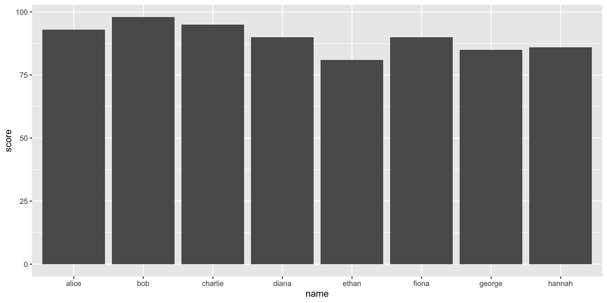
- enhanced bar plot with titles, axis labels, and modified colours
ggplot(student_data, aes(x = name, y = score, fill = passed)) +
geom_bar(stat = "identity") +
scale_fill_manual(values = c("TRUE" = "blue", "FALSE" = "red")) +
labs(title = "student scores", x = "student name", y = "score") +
theme_minimal()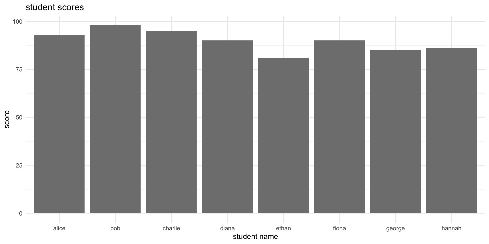
ggplot2 Scatterplot: student scores against study hours
ggplot(student_data, aes(x = study_hours, y = score, color = passed)) +
geom_point(size = 4) +
labs(title = "student scores vs. study hours", x = "study hours", y = "score") +
theme_minimal() +
scale_color_manual(values = c("failed" = "red", "passed" = "blue"))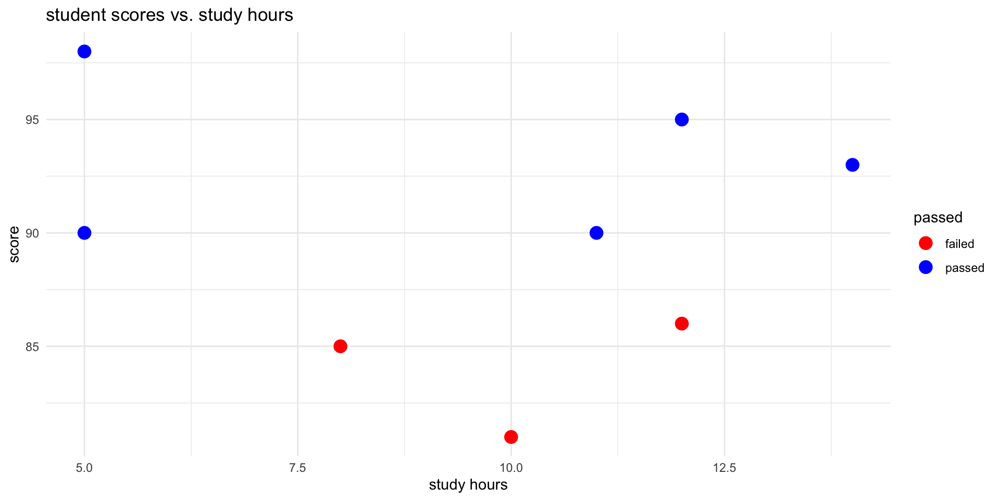
ggplot2 Boxplot: scores by pass/fail status
ggplot(student_data, aes(x = passed, y = score, fill = passed)) +
geom_boxplot() +
labs(title = "score distribution by pass/fail status", x = "status", y = "score") +
theme_minimal() +
scale_fill_manual(values = c("failed" = "red", "passed" = "blue"))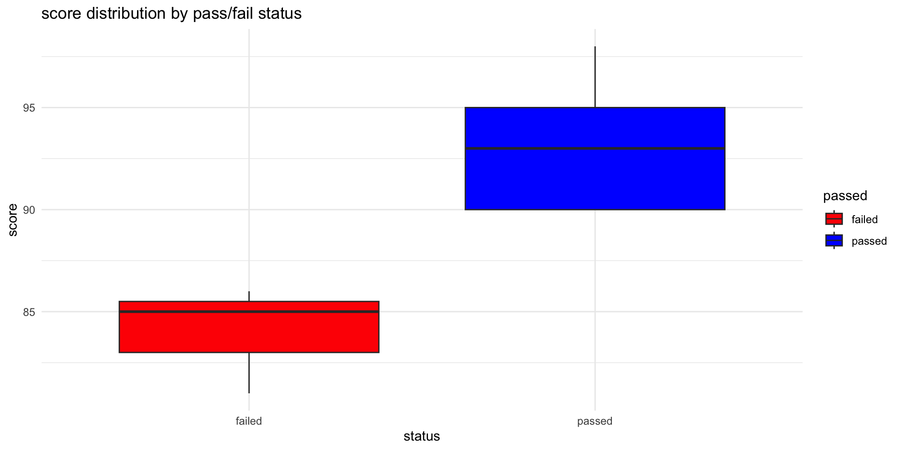
median (Q2/50th percentile): divides the dataset into two halves.
first quartile (Q1/25th percentile): lower edge indicating that 25% of the data falls below this value.
third quartile (Q3/75th percentile): upper edge of the box represents the third quartile, showing that 75% of the data is below this value.
interquartile range (IQR): height of the box represents the IQR: distance between the first and third quartiles (Q3 - Q1) / middle 50% of the data.
whiskers: The lines extending from the top and bottom of the box (the “whiskers”) indicate the range of the data, typically to the smallest and largest values within 1.5 * IQR from the first and third quartiles, respectively. Points outside this range are often considered outliers and can be plotted individually.
outliers: points that lie beyond the whiskers
ggplot2 Histogram: distribution of scores
ggplot(student_data, aes(x = score, fill = passed)) +
geom_histogram(binwidth = 5, color = "black", alpha = 0.7) +
labs(title = "histogram of scores", x = "score", y = "count") +
theme_minimal() +
scale_fill_manual(values = c("failed" = "red", "passed" = "blue"))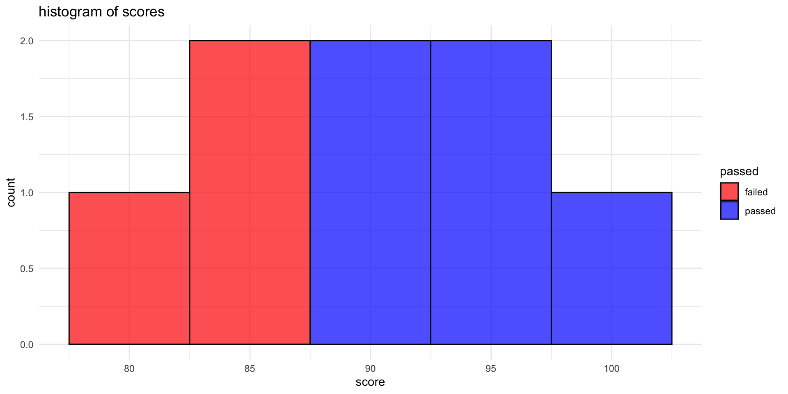
ggplot2 Lineplot
# prep data
months <- factor(month.abb[1:8], levels = month.abb[1:8])
study_hours <- c(0, 3, 15, 30, 35, 120, 18, 15)
study_data <- data.frame(month = months, study_hours = study_hours)
# line plot
ggplot(study_data, aes(x = month, y = study_hours, group = 1)) +
geom_line(linewidth = 1, color = "blue") +
geom_point(color = "red", size = 1) +
labs(title = "monthly study hours", x = "month", y = "study hours") +
theme_minimal()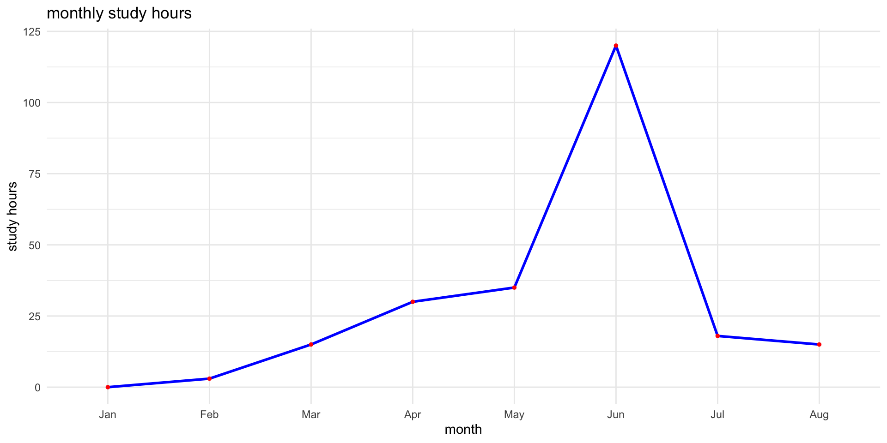
Base R Scatter Plot: scores vs. study hours
# scatter plot
plot(student_data$study_hours, student_data$score,
main = "scatter plot of scores vs. study hours",
xlab = "study hours", ylab = "score",
pch = 19, col = ifelse(student_data$passed == "passed", "blue", "red"))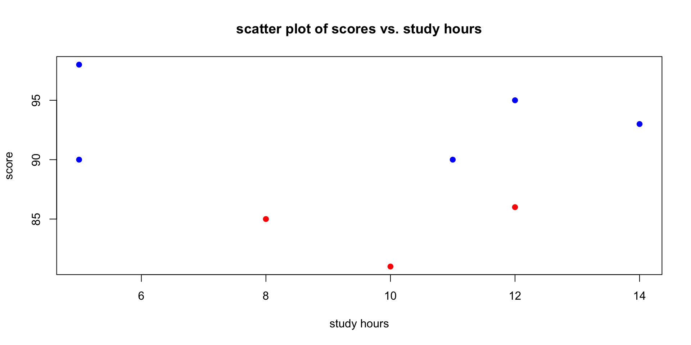
Base R Histogram
- histogram to visualise distribution of student scores
# histogram
hist(student_data$score,
breaks = 5,
col = "skyblue",
main = "histogram of student scores",
xlab = "scores",
border = "white")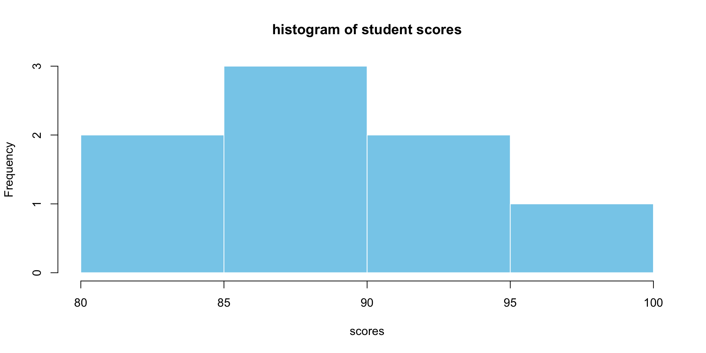
Base R Boxplots: Distribution by Pass/Fail
# boxplot
boxplot(score ~ passed, data = student_data,
main = "score distribution by pass/fail status",
xlab = "status", ylab = "scores",
col = c("red", "blue"))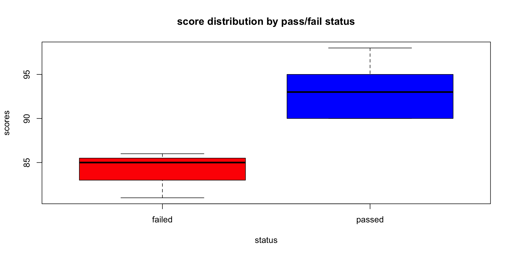
median (Q2/50th percentile): divides the dataset into two halves.
first quartile (Q1/25th percentile): lower edge indicating that 25% of the data falls below this value.
third quartile (Q3/75th percentile): upper edge of the box represents the third quartile, showing that 75% of the data is below this value.
interquartile range (IQR): height of the box represents the IQR: distance between the first and third quartiles (Q3 - Q1) / middle 50% of the data.
whiskers: The lines extending from the top and bottom of the box (the “whiskers”) indicate the range of the data, typically to the smallest and largest values within 1.5 * IQR from the first and third quartiles, respectively. Points outside this range are often considered outliers and can be plotted individually.
outliers: points that lie beyond the whiskers
Base R Barplot: Score Distributions
# prep data for the barplot
scores_table <- table(student_data$score)
barplot(scores_table,
main = "Barplot of Scores",
xlab = "Scores",
ylab = "Frequency",
col = "skyblue",
border = "white")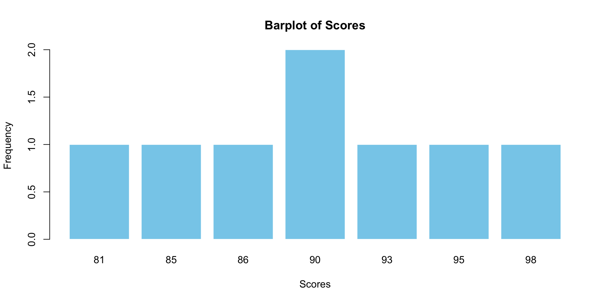
Base R Line Plot
# convert 'month' to a numeric scale for plotting positions
months_num <- 1:length(study_data$month) # Simple numeric sequence
# Plotting points with suppressed x-axis
plot(months_num, study_data$study_hours,
type = "p", # Points
pch = 19, # Type of point
col = "red",
xlab = "Month",
ylab = "Study Hours",
main = "Monthly Study Hours",
xaxt = "n") # Suppress the x-axis
# add lines between points
lines(months_num, study_data$study_hours,
col = "blue",
lwd = 1) # Line width
# add custom month labels to the x-axis at appropriate positions
axis(1, at = months_num, labels = study_data$month, las=2) # `las=2` makes labels perpendicular to axis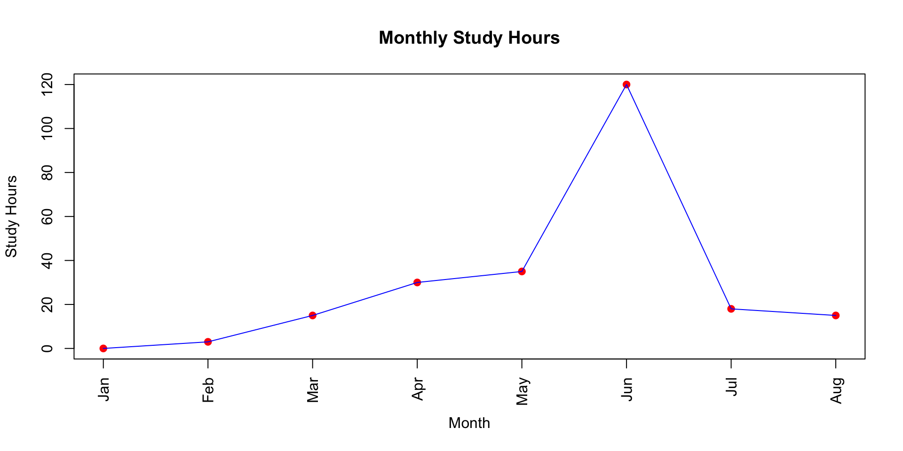
What have your learned?
- You have Base R and R-studio Downloaded on your machine
- You are able able to use R for basic analysis and graphing
- You will need to practice, and will have lots of opporunity.
Where to Get Help
- Large Language Models (LLMs): LLMs are trained on extensive datasets. They are extremely good coding tutors. Open AI’s GPT-4 considerably outperforms GPT-3.5. However GPT 3.5 should be good enough. Gemini has a two-month free trial. LLM’s are rapidly evolving. However, presently, to use these tools, and to spot their errors, you will need to know how to code. Which is fortunate because coding makes you smarter!
Note: you will not be assessed for R-code. Help from LLM’s for coding does not consitute a breach of academic integrity in this course. Your tests are in-class; no LLM’s allowed. For your final report, you will need to cite all sources, and how you used them, including LLMs.
Stack Overflow: an outstanding resource for most problems. Great community.
Cross-validated the best place to go for stats advice. (LLM’s are only safe for standard statistics. They do not perform well for causal inference.)
Developer Websites and GitHub Pages: Tidyverse
Your tutors and course coordinator. We care. We’re here to help you!
References
Wickham, H., & Grolemund, G. (2016). R for Data Science. O’Reilly Media. [Available online](https://r4ds.had.co.nz
A helpful resource for learning R is Megan Hall’s lecture available at: https://meghan.rbind.io/talk/neair/.
RStudio has compiled numerous accessible materials for learning R, which can be found here: https://education.rstudio.com/learn/beginner/.